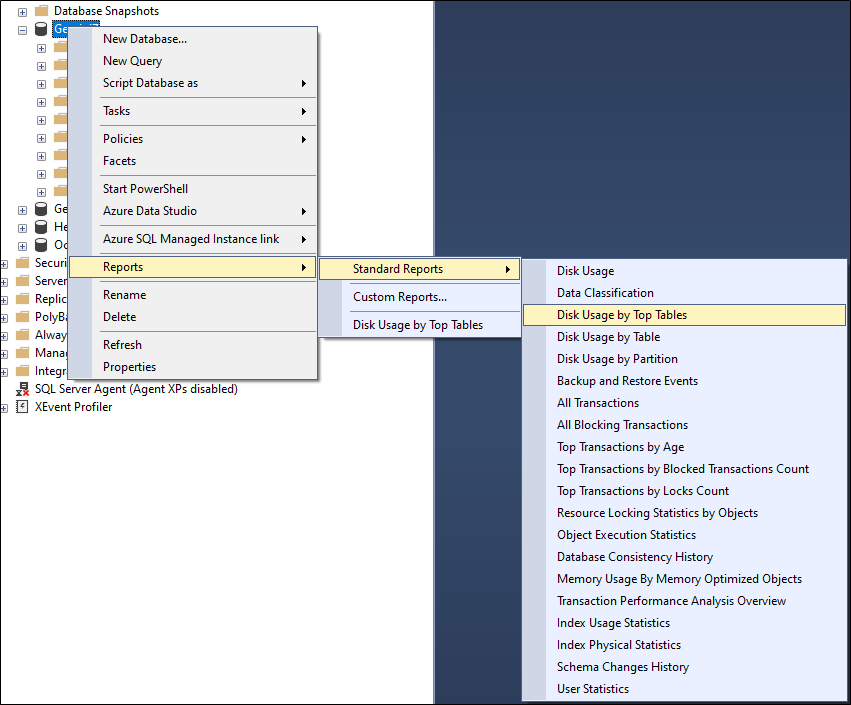

You're a DBA and you can see that your Gemini database has got bigger and bigger. It used to take 10 minutes to back up, now it takes an hour. Then again, it is several hudred times bigger than it used to be. What can you do?
Sql Server Management Studio is your friend. Simply right-click your database, select Reports...Standard Reports, and run the "Disk Usage By Top Tables" report.
Without even looking at your report, we can tell you what the biggest tables will be.
The first thing to do is to get the business to agree that what is really old and closed should be archived. That, in most archiving exercises, is the hardest part.
The technical aspects of archiving are simple once you establish a cut-off date, because all you need to know now are the tables and the joins in SQL to find old, closed records and archive them.
We are not going to attempt to be your DBA. For a DBA the tasks will be simple. We're not even going to write grown-up SQL with "Join x on y...", we're going to us cheat sheet SQL, but the example below will show any competent DBA what tables are involved and what they need to do.
-- SAMPLE SELECT STATEMENTS - You can hard-code a date if you wish. The example below looks at items in a closed state (isfinal = 1) that have not been touched in 1095 days
select a.* from breeze_enquiry a where a.issueid in ( select b.issueid from gemini_issues b where b.revised < DATEADD(DD, -1095, CAST(CURRENT_TIMESTAMP AS DATE)) and b.issuestatusid in ( select c.statusid from gemini_issuestatus c where c.isfinal = 1 and c.statusid = b.issuestatusid ) ); select a.* from gemini_issueattachments a where a.issueid in ( select b.issueid from gemini_issues b where b.revised < DATEADD(DD, -1095, CAST(CURRENT_TIMESTAMP AS DATE)) and b.issuestatusid in ( select c.statusid from gemini_issuestatus c where c.isfinal = 1 and c.statusid = b.issuestatusid ) ); select a.* from gemini_customfielddata a where a.issueid in ( select b.issueid from gemini_issues b where b.revised < DATEADD(DD, -1095, CAST(CURRENT_TIMESTAMP AS DATE)) and b.issuestatusid in ( select c.statusid from gemini_issuestatus c where c.isfinal = 1 and c.statusid = b.issuestatusid ) ); select a.* from gemini_issueaudit a where a.issueid in ( select b.issueid from gemini_issues b where b.revised < DATEADD(DD, -1095, CAST(CURRENT_TIMESTAMP AS DATE)) and b.issuestatusid in ( select c.statusid from gemini_issuestatus c where c.isfinal = 1 and c.statusid = b.issuestatusid ) ); select a.* from gemini_issuecomments a where a.issueid in ( select b.issueid from gemini_issues b where b.revised < DATEADD(DD, -1095, CAST(CURRENT_TIMESTAMP AS DATE)) and b.issuestatusid in ( select c.statusid from gemini_issuestatus c where c.isfinal = 1 and c.statusid = b.issuestatusid ) );